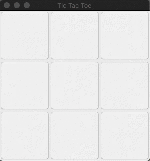

Step 1: An application to play Tic-Tac-Toe
We start our tutorial by inspecting an application to play Tic-Tac-Toe. When started, the app shows an empty board with buttons that can be used to place marks in the correspondig field of the board. Players take turns to place a mark until the game ends.

The source code underlying this tutorial is available in a git repository. To make it easier to follow along, tags are defined for the different steps we will take.
To work with the code you need Eclipse with Modelling Tools.
After importing the project inside the repository into your workspace, you can start the class app/TicTacToe to run the application.
If you don’t want to clutter your workspace, you can start Eclipse with the root folder of the repository as workspace.
Start now by cloning the repository and creating a branch for the first step.
git clone https://github.com/sebfisch/emf-adapter-tutorial-code
cd emf-adapter-tutorial-code
git checkout -b step1 step1-static-methods-v1
Alternatively, you can download the corresponding code in a zip file.
If you don’t want to run the game or write code yourself, you can look at existing code for the first step online.
Next, we will discuss the game-state model.